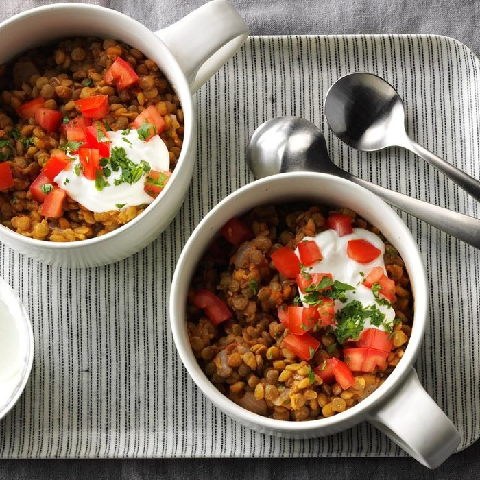

Tomato Lentil Bowls

Hearty lentils and fragrant spices in an easy, delicious package.
This dish is exceptionally healthy and filling with lots of protein-packed lentils and vitamin-rich tomatoes. It's also vegan if you omit the yogurt, gluten-free, and keeps well as a leftover lunch.
Since this recipe uses several different spices, you can always adjust quantities to reach you preferred level of spice or sweetness!
Ingredients
- Olive oil (1 Tbsp)
- Onions (2, chopped)
- Garlic (4 cloves, minces
- Dry lentils (2 cups red or brown)
- Salt (1 tsp)
- Ginger (1/2 tsp dry or 1 tsp fresh)
- Paprika (1/2 tsp)
- Black pepper (1/4 tsp)
- Water (3 cups)
- Lemon juice (1/4 cup)
- Tomato paste (3 Tbsp)
- Chopped tomatoes, cilantro, and yogurt to garnish
Steps
- In a large saucepan, heat oil over medium-high heat.
- Add onion, and sauté for about 2 minutes.
- Add garlic, and sauté for about 30 seconds.
- Stir in lentils and spices, and mix well for about 1 minute.
- Add the water, and bring to a boil.
- Once boiling, reduce heat and let simmer for 20 minutes, stirring occasionally until lentils are soft.
- Stir in the lemon juice and tomato paste.
- Serve hot with optional garnishes, along with rice or naan bread.